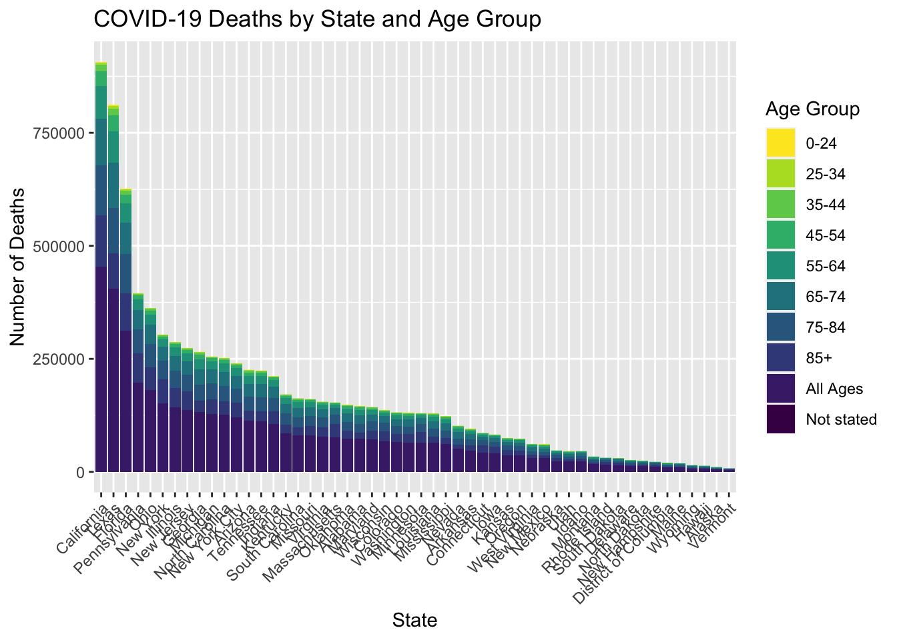
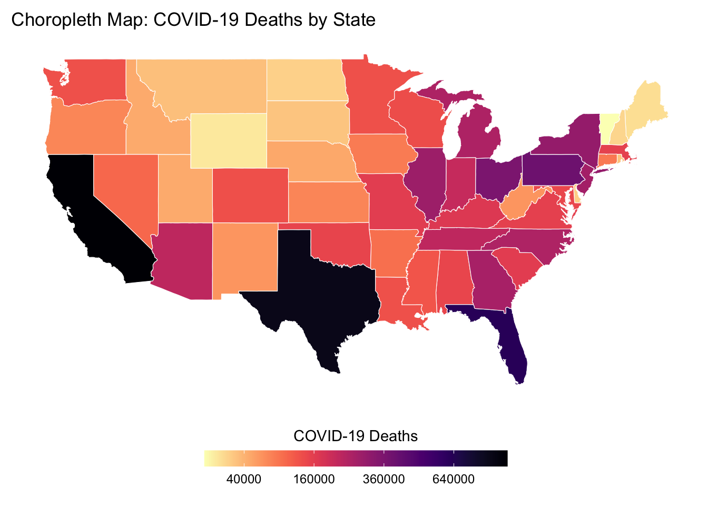

Creating Effective Visualizations for COVID-19 Death Cases
Discover the power of data visualization as we explore COVID-19 death cases in the United States through various charts.
Visualization
COVID-19
Observable
Assignment
Author
Jiyin Zhang
Published
May 8, 2023
PREAMBLE
Covid-19.
The COVID-19 pandemic has undoubtedly affected every aspect of our lives, and understanding its impact is crucial in our ongoing efforts to mitigate the spread of the virus and protect vulnerable populations. One valuable resource for understanding this impact is the dataset titled “Conditions Contributing to COVID-19 Deaths, by State and Age, Provisional 2020-2023” which offers a comprehensive look at the health conditions and causes mentioned in conjunction with COVID-19 related deaths across different age groups and jurisdictions.
In this blog post, I will explore this dataset and showcase a series of visualizations that aim to provide greater insight into the patterns, trends, and relationships hidden within the data. Our visualizations will include a state-wise stacked bar chart of ages of COVID-19 deaths, an animated visualization capturing the changing dynamics of deaths in each state, an interactive network chart connecting death age groups with the conditions leading to death, and finally, a choropleth map illustrating COVID-19 deaths by state. By delving into these visualizations, I hope to not only improve our understanding of the pandemic’s impact on various communities but also inspire data-driven decision-making in our ongoing fight against COVID-19. So, let’s dive in and uncover the stories hidden within the data.
Data Preparation
Code
import pandas as pd# Read the input CSV fileinput_file ='Conditions_Contributing_to_COVID-19_Deaths__by_State_and_Age__Provisional_2020-2023.csv'df = pd.read_csv(input_file)# Split the DataFrame based on the "Group" column valuesdf_by_total = df[df['Group'] =='By Total']df_by_month = df[df['Group'] =='By Month']df_by_year = df[df['Group'] =='By Year']# Write the DataFrames to separate CSV filesdf_by_total.to_csv('by_total.csv', index=False)df_by_month.to_csv('by_month.csv', index=False)df_by_year.to_csv('by_year.csv', index=False)def state_comparison():# List of U.S. states us_states = ['Alabama', 'Alaska', 'Arizona', 'Arkansas', 'California', 'Colorado', 'Connecticut','Delaware', 'Florida', 'Georgia', 'Hawaii', 'Idaho', 'Illinois', 'Indiana', 'Iowa','Kansas', 'Kentucky', 'Louisiana', 'Maine', 'Maryland', 'Massachusetts', 'Michigan','Minnesota', 'Mississippi', 'Missouri', 'Montana', 'Nebraska', 'Nevada', 'New Hampshire','New Jersey', 'New Mexico', 'New York', 'North Carolina', 'North Dakota', 'Ohio', 'Oklahoma','Oregon', 'Pennsylvania', 'Rhode Island', 'South Carolina', 'South Dakota', 'Tennessee','Texas', 'Utah', 'Vermont', 'Virginia', 'Washington', 'West Virginia', 'Wisconsin', 'Wyoming' ]# Read the CSV file input_file ='by_year.csv' df = pd.read_csv(input_file)# Extract unique state values from the 'State' column unique_states_in_csv = df['State'].unique()# Compare the unique state values with the U.S. states list missing_states =set(us_states) -set(unique_states_in_csv) extra_states =set(unique_states_in_csv) -set(us_states)print("Missing states:", missing_states)print("Extra states:", extra_states)def state_filter(filename):# Read the input CSV file#input_file = 'Conditions_Contributing_to_COVID-19_Deaths__by_State_and_Age__Provisional_2020-2023.csv' df = pd.read_csv(filename)# Filter out rows with 'State' column having the value 'Puerto Rico' filtered_df = df[df['State'] !='Puerto Rico']# Write the filtered DataFrame to a new CSV file output_file ='filtered_'+ filename filtered_df.to_csv(output_file, index=False)if__name__=='__main__':#state_comparison()#state_filter('by_month.csv')
In the data preparation stage, I utilized Python to divide the entire CSV file into three separate subfiles based on the granularity of time - by total, by year, and by month. I then applied a filter to verify the validity of values under the ‘State’ column. An unexpected subset for ‘Puerto Rico’ was discovered and subsequently discarded. Additionally, ‘District of Columbia’ and ‘New York City’ were singled out from the states.
To plot the choropleth, I found a mapping function for R that geocodes state names, including ‘District of Columbia,’ into a map with regions represented by longitudes and latitudes. Unfortunately, the function did not include New York City, so I had to exclude this part of the data when creating the choropleth visualization.
In addition to these preprocessing steps, I carried out further data cleansing tasks using Python, tailored to the specific requirements of each visualization task.
Visualizations
Bar Chart for COVID-19 Deaths by State and Age Group
Code
#library(viridisLite)library(viridis)
Code
library(ggplot2)# Read the CSV filedf <-read.csv("./piechart/filtered_by_total.csv")# Group the data by state and age groupdf_grouped <-aggregate(COVID.19.Deaths ~ State + Age.Group, data = df, sum)# Exclude the "United States" rowsdf_grouped <-subset(df_grouped, State !="United States")# Order the states by total number of deathsstate_order <-with(df_grouped, reorder(State, -COVID.19.Deaths, sum))# Create the stacked bar chartggplot(df_grouped, aes(x = state_order, y = COVID.19.Deaths, fill = Age.Group)) +geom_bar(stat ="identity") +ggtitle("COVID-19 Deaths by State and Age Group") +xlab("State") +ylab("Number of Deaths") +theme(axis.text.x =element_text(angle =45, hjust =1)) +theme(legend.position ="right") +guides(fill=guide_legend(title="Age Group")) +scale_fill_viridis(discrete =TRUE, option ="viridis", direction =-1)

This visualization presents data from the “Conditions Contributing to COVID-19 Deaths, by State and Age, Provisional 2020-2023” dataset, which provides information on the number of COVID-19 deaths by state, age group, and time period. This visualization focuses on the total number of COVID-19 deaths by state and age group, using data from the “By Total” time period.
The bars in the chart represent the total number of COVID-19 deaths for each state and age group, with the color of each bar indicating the age group. The chart allows for easy comparison of the number of COVID-19 deaths between different states and age groups, with the height of each bar corresponding to the number of deaths.
To provide a clear representation of the data, the information for the United States as a whole has been filtered out from the visualization. This is because including it would compress the height of individual state bars, making it difficult to distinguish between the states.
Animated Visualization for COVID-19 Deaths in Each State
Code
import pandas as pdfrom datetime import datetime# Read the CSV filedf = pd.read_csv("filtered_by_month.csv")# Define the US states listus_states = ['District of Columbia', 'New York City', 'Alabama', 'Alaska', 'Arizona', 'Arkansas', 'California', 'Colorado', 'Connecticut', 'Delaware', 'Florida', 'Georgia', 'Hawaii', 'Idaho', 'Illinois', 'Indiana', 'Iowa', 'Kansas', 'Kentucky', 'Louisiana', 'Maine', 'Maryland', 'Massachusetts', 'Michigan','Minnesota', 'Mississippi', 'Missouri', 'Montana', 'Nebraska', 'Nevada', 'New Hampshire', 'New Jersey','New Mexico', 'New York', 'North Carolina', 'North Dakota', 'Ohio', 'Oklahoma', 'Oregon', 'Pennsylvania','Rhode Island', 'South Carolina', 'South Dakota', 'Tennessee', 'Texas', 'Utah', 'Vermont', 'Virginia','Washington', 'West Virginia', 'Wisconsin', 'Wyoming']# Exclude rows where the 'name' column is 'United States'df = df[df['State'] !='United States']# Extract the necessary columns and rename themdf = df[['Start Date', 'State', 'COVID-19 Deaths']]df = df.rename(columns={'Start Date': 'date', 'State': 'name', 'COVID-19 Deaths': 'value'})# Convert the date column to datetime formatdf['date'] = pd.to_datetime(df['date'], format='%m/%d/%Y')# Format the date column as '1970-01-01'df['date'] = df['date'].apply(lambda x: x.strftime('%Y-%m-%d'))# Add the category column using the US states listdf['category'] = df['name'].apply(lambda x: us_states.index(x))# Group the data by date, name, and category, and sum the valuesdf = df.groupby(['date', 'name', 'category'], as_index=False).sum()# Add the index column and reorder the columnsdf.insert(0, 'index', range(1, len(df) +1))df = df[['index', 'date', 'name', 'category', 'value']]# Cast the index and name columns to stringdf['index'] = df['index'].astype(str)df['name'] = df['name'].astype(str)# Save the output to a CSV filedf.to_csv('./horizontal/output.csv', index=False)import re# Read the CSV filewithopen('output.csv', 'r') asfile: csv_data =file.read()# Define the regex patternpattern =r'(?<=,)([a-zA-Z ]+)(?=,)'# Define the replacement stringreplace_str =r'"\1"'# Replace the matches with the original text enclosed in quotescsv_data = re.sub(pattern, replace_str, csv_data)# Write the updated CSV filewithopen('output2.csv', 'w') asfile:file.write(csv_data)
This visualization required significant data cleansing and adjustments to the code, which I didn’t initially expect. I used the Zomstates.csv as a reference to modify my csv file. I also employed regular expressions to add quotes around the State names to prevent spaces from causing issues in the code.
Moreover, the visualization didn’t work correctly when copying and pasting from the .qmd file. I made a modification in the function bars(svg) as follows:
<!-- .attr("x", x(0)) -->
.attr("x", -6)
The variable x(0) appeared unstable, causing many of the bars’ x-axis positions to shift towards the center of the screen. Only a small portion of the data functioned correctly, starting from the left margin. I’m not entirely sure, but -6 might be related to the margin variable. Without this modification, the bars would start from the middle of the graph.
I also found that the original animation speed was too fast for my data compared to the initial zombie data. I increased the duration tenfold to 250.
Code
data = d3.csvParse(awaitFileAttachment("./horizontal/output2.csv").text(), d3.autoType)viewof replay =html`<button>Replay`
Code
chart = { replay;const svg = d3.create("svg").attr("viewBox", [0,0, width, height]);const updateBars =bars(svg);const updateAxis =axis(svg);const updateLabels =labels(svg);const updateTicker =ticker(svg);yield svg.node();for (const keyframe of keyframes) {const transition = svg.transition().duration(duration).ease(d3.easeLinear);// Extract the top bar’s value. x.domain([0, keyframe[1][0].value]);updateAxis(keyframe, transition);updateBars(keyframe, transition);updateLabels(keyframe, transition);updateTicker(keyframe, transition); invalidation.then(() => svg.interrupt());await transition.end(); }}duration =250n =50k =10names =newSet(data.map(d => d.name))datevalues =Array.from(d3.rollup(data, ([d]) => d.value, d =>+d.date, d => d.name)).map(([date, data]) => [newDate(date), data]).sort(([a], [b]) => d3.ascending(a, b))functionrank(value) {const data =Array.from(names, name => ({name,value:value(name)})); data.sort((a, b) => d3.descending(a.value, b.value));for (let i =0; i < data.length;++i) data[i].rank=Math.min(n, i);return data;}keyframes = {const keyframes = [];let ka, a, kb, b;for ([[ka, a], [kb, b]] of d3.pairs(datevalues)) {for (let i =0; i < k;++i) {const t = i / k; keyframes.push([newDate(ka * (1- t) + kb * t),rank(name => (a.get(name) ||0) * (1- t) + (b.get(name) ||0) * t) ]); } } keyframes.push([newDate(kb),rank(name => b.get(name) ||0)]);return keyframes;}nameframes = d3.groups(keyframes.flatMap(([, data]) => data), d => d.name)prev =newMap(nameframes.flatMap(([, data]) => d3.pairs(data, (a, b) => [b, a])))next =newMap(nameframes.flatMap(([, data]) => d3.pairs(data)))functionbars(svg) {let bar = svg.append("g").attr("fill-opacity",0.6).selectAll("rect");return ([date, data], transition) => bar = bar.data(data.slice(0, n), d => d.name).join( enter => enter.append("rect").attr("fill", color).attr("height", y.bandwidth())<!--.attr("x",x(0)) -->.attr("x",-6).attr("y", d =>y((prev.get(d) || d).rank)).attr("width", d =>x((prev.get(d) || d).value) -x(0)), update => update, exit => exit.transition(transition).remove().attr("y", d =>y((next.get(d) || d).rank)).attr("width", d =>x((next.get(d) || d).value) -x(0)) ).call(bar => bar.transition(transition).attr("y", d =>y(d.rank)).attr("width", d =>x(d.value) -x(0)));}functionlabels(svg) {let label = svg.append("g").style("font","bold 12px var(--sans-serif)").style("font-variant-numeric","tabular-nums").attr("text-anchor","end").selectAll("text");return ([date, data], transition) => label = label.data(data.slice(0, n), d => d.name).join( enter => enter.append("text").attr("transform", d =>`translate(${x((prev.get(d) || d).value)},${y((prev.get(d) || d).rank)})`).attr("y", y.bandwidth() /2).attr("x",-6).attr("dy","-0.25em").text(d => d.name).call(text => text.append("tspan").attr("fill-opacity",0.7).attr("font-weight","normal").attr("x",-6).attr("dy","1.15em")), update => update, exit => exit.transition(transition).remove().attr("transform", d =>`translate(${x((next.get(d) || d).value)},${y((next.get(d) || d).rank)})`).call(g => g.select("tspan").tween("text", d =>textTween(d.value, (next.get(d) || d).value))) ).call(bar => bar.transition(transition).attr("transform", d =>`translate(${x(d.value)},${y(d.rank)})`).call(g => g.select("tspan").tween("text", d =>textTween((prev.get(d) || d).value, d.value))))}functiontextTween(a, b) {const i = d3.interpolateNumber(a, b);returnfunction(t) {this.textContent=formatNumber(i(t)); };}formatNumber = d3.format(",d")functionaxis(svg) {const g = svg.append("g").attr("transform",`translate(0,${margin.top})`);const axis = d3.axisTop(x).ticks(width /160).tickSizeOuter(0).tickSizeInner(-barSize * (n + y.padding()));return (_, transition) => { g.transition(transition).call(axis); g.select(".tick:first-of-type text").remove(); g.selectAll(".tick:not(:first-of-type) line").attr("stroke","white"); g.select(".domain").remove(); };}functionticker(svg) {const now = svg.append("text").style("font",`bold ${barSize}px var(--sans-serif)`).style("font-variant-numeric","tabular-nums").attr("text-anchor","end").attr("x", width -6).attr("y", margin.top+ barSize * (n -0.45)).attr("dy","0.32em").text(formatDate(keyframes[0][0]));return ([date], transition) => { transition.end().then(() => now.text(formatDate(date))); };}formatDate = d3.utcFormat("%Y")color = {const scale = d3.scaleSequential(d3.interpolate("red","blue")).domain([1,48]);if (data.some(d => d.category!==undefined)) {const categoryByName =newMap(data.map(d => [d.name, d.category])) scale.domain(Array.from(categoryByName.values()));return d =>scale(categoryByName.get(d.name)); }return d =>scale(d.name);}<!-- color = { --><!--const scale = d3.scaleSequential(d3.interpolate("red","blue")).domain([1,48]);--><!--if (data.some(d => d.category!==undefined)) { --><!--const categoryByName =newMap(data.map(d => [d.name, d.category]));--><!--const categories =Array.from(categoryByName.values()).filter((d, i, arr) => arr.indexOf(d) === i);--><!--const scaleByCategory =typeof categories[0] ==="number"?--><!-- d3.scaleSequential(d3.interpolateSpectral).domain(d3.extent(categories)) :--><!-- d3.scaleOrdinal().domain(categories).range(d3.quantize(d3.interpolateSpectral, categories.length));--><!--return d =>scale(scaleByCategory(categoryByName.get(d.name)));--><!-- } --><!--return (d, i) =>scale(i);--><!-- } --><!-- x = d3.scaleLinear([0,1], [margin.left, width - margin.right]) -->x = d3.scaleLinear([0,1], [margin.left, width - margin.right])y = d3.scaleBand().domain(d3.range(n +1)).rangeRound([margin.top, margin.top+ barSize * (n +1+0.1)]).padding(0.1)height = margin.top+ barSize * n + margin.bottombarSize =48margin = ({top:16,right:6,bottom:6,left:0})d3 =require("d3@6")
This visualization presents the dynamic monthly changes in COVID-19 death cases from 2020 to 2023 in each state across the United States. By showcasing the data in a ranked format, it provides an intuitive way to understand the shifts in state rankings as the pandemic progressed. This visualization helps to identify states with the highest death tolls at different points in time.
Interactive Network Chart for Ages and Conditions
Code
import csvimport json# Read in the CSV filefilename ="./net/filtered_by_total.csv"withopen(filename, "r") as csvfile: reader = csv.DictReader(csvfile) rows = [row for row in reader if row["State"] =="United States"]# Create nodes dictionaryage_groups =list(set(row["Age Group"] for row in rows))condition_groups =list(set(row["Condition Group"] for row in rows))nodes = [{"id": group, "group": i} for i, group inenumerate(age_groups + condition_groups)]# Create links dictionarymax_value =max(int(row["COVID-19 Deaths"]) for row in rows)min_value =min(int(row["COVID-19 Deaths"]) for row in rows)links = [{"source": row["Age Group"], "target": row["Condition Group"], "value": (int(row["COVID-19 Deaths"]) - min_value) / (max_value - min_value) *100} for row in rows]# Combine nodes and links into a single dictionarynetwork = {"nodes": nodes, "links": links}# Write to a JSON filewithopen("./net/network.json", "w") as outfile: json.dump(network, outfile, indent=4)# Load the JSON datawithopen('./net/network.json', 'r') as f: data = json.load(f)# Create a dictionary to store the max values for each sourcemax_values = {}# Loop through the links to find the max value for each sourcefor link in data['links']: source = link['source'] value = link['value']if source in max_values: max_values[source].append(value)else: max_values[source] = [value]# Loop through the links again to filter out those with values less than the top 3filtered_links = []for link in data['links']: source = link['source'] value = link['value']iflen(max_values[source]) >3and value <sorted(max_values[source], reverse=True)[2]:continue filtered_links.append(link)# Create a new dictionary with the filtered linksfiltered_data = {'nodes': data['nodes'],'links': filtered_links}# Save the filtered data to a new JSON filewithopen('./net/filtered_network.json', 'w') as f: json.dump(filtered_data, f, indent=4)withopen('./net/filtered_network.json') as f: data = json.load(f)nodes = []new_links = []sources =set([link['source'] for link in data['links']])targets =set([link['target'] for link in data['links']])for node in sources.union(targets):if node in sources: nodes.append({"id": node, "group": 0})else:for source in sources: new_node_id =f"{node}({source})" nodes.append({"id": new_node_id, "group": 1})for link in data['links']:if link['source'] == source and link['target'] == node: new_links.append({"source": source, "target": new_node_id, "value": link['value']})new_data = {"nodes": nodes, "links": new_links}withopen('./net/new_filtered_network.json', 'w') as f: json.dump(new_data, f, indent=4)# Load the JSON filewithopen("./net/new_filtered_network.json") as f: data = json.load(f)# Find all nodes in group 0group0_nodes = [node for node in data['nodes'] if node['group'] ==0]# Create a center nodecenter_node = {'id': 'center', 'group': -1}# Add links from center node to all group 0 nodeslinks = data['links']for node in group0_nodes: links.append({'source': 'center', 'target': node['id'], 'value': 1})# Add the center node to the nodes listnodes = data['nodes']nodes.append(center_node)# Save the modified data as a new JSON filenew_data = {'nodes': nodes, 'links': links}withopen("./net/new_filtered_network_with_center.json", "w") as f: json.dump(new_data, f)
This visualization necessitated substantial data cleansing efforts, such as generating node and link JSON files and trimming extraneous links to display only the top 3 relevant connections. Since the network visualization does not account for directional connections, it can create cross-linked nodes, resulting in a nested graph. To achieve a more visually explicit appearance, I manually duplicated the node of conditions. Furthermore, the nodes tend to gradually fade away from the screen, so incorporating a central node is essential to maintain their positions within the visualization.
Code
chart2 =ForceGraph(miserables, {nodeId: d => d.id,nodeGroup: d => d.group,nodeTitle: d =>`${d.id}\n${d.group}`,linkStrokeWidth: l =>Math.sqrt(l.value), width,height:600, invalidation // a promise to stop the simulation when the cell is re-run})
Code
miserables =FileAttachment("./net/new_filtered_network_with_center.json").json()// Copyright 2021 Observable, Inc.// Released under the ISC license.// https://observablehq.com/@d3/force-directed-graphfunctionForceGraph({ nodes,// an iterable of node objects (typically [{id}, …]) links // an iterable of link objects (typically [{source, target}, …])}, { nodeId = d => d.id,// given d in nodes, returns a unique identifier (string) nodeGroup,// given d in nodes, returns an (ordinal) value for color nodeGroups,// an array of ordinal values representing the node groups nodeTitle,// given d in nodes, a title string nodeFill ="currentColor",// node stroke fill (if not using a group color encoding) nodeStroke ="#fff",// node stroke color nodeStrokeWidth =1.5,// node stroke width, in pixels nodeStrokeOpacity =1,// node stroke opacity nodeRadius =5,// node radius, in pixels nodeStrength, linkSource = ({source}) => source,// given d in links, returns a node identifier string linkTarget = ({target}) => target,// given d in links, returns a node identifier string linkStroke ="#999",// link stroke color linkStrokeOpacity =0.6,// link stroke opacity linkStrokeWidth =1.5,// given d in links, returns a stroke width in pixels linkStrokeLinecap ="round",// link stroke linecap linkStrength, colors = d3.schemeTableau10,// an array of color strings, for the node groups width =640,// outer width, in pixels height =400,// outer height, in pixels invalidation // when this promise resolves, stop the simulation} = {}) {// Compute values.const N = d3.map(nodes, nodeId).map(intern);const LS = d3.map(links, linkSource).map(intern);const LT = d3.map(links, linkTarget).map(intern);if (nodeTitle ===undefined) nodeTitle = (_, i) => N[i];const T = nodeTitle ==null?null: d3.map(nodes, nodeTitle);const G = nodeGroup ==null?null: d3.map(nodes, nodeGroup).map(intern);const W =typeof linkStrokeWidth !=="function"?null: d3.map(links, linkStrokeWidth);const L =typeof linkStroke !=="function"?null: d3.map(links, linkStroke);// Replace the input nodes and links with mutable objects for the simulation. nodes = d3.map(nodes, (_, i) => ({id: N[i]})); links = d3.map(links, (_, i) => ({source: LS[i],target: LT[i]}));// Compute default domains.if (G && nodeGroups ===undefined) nodeGroups = d3.sort(G);// Construct the scales.const color = nodeGroup ==null?null: d3.scaleOrdinal(nodeGroups, colors);// Construct the forces.const forceNode = d3.forceManyBody();const forceLink = d3.forceLink(links).id(({index: i}) => N[i]);if (nodeStrength !==undefined) forceNode.strength(nodeStrength);if (linkStrength !==undefined) forceLink.strength(linkStrength);const simulation = d3.forceSimulation(nodes).force("link", forceLink).force("charge", forceNode).force("center", d3.forceCenter()).on("tick", ticked);const svg = d3.create("svg").attr("width", width).attr("height", height).attr("viewBox", [-width /2,-height /2, width, height]).attr("style","max-width: 100%; height: auto; height: intrinsic;");const link = svg.append("g").attr("stroke",typeof linkStroke !=="function"? linkStroke :null).attr("stroke-opacity", linkStrokeOpacity).attr("stroke-width",typeof linkStrokeWidth !=="function"? linkStrokeWidth :null).attr("stroke-linecap", linkStrokeLinecap).selectAll("line").data(links).join("line");const node = svg.append("g").attr("fill", nodeFill).attr("stroke", nodeStroke).attr("stroke-opacity", nodeStrokeOpacity).attr("stroke-width", nodeStrokeWidth).selectAll("circle").data(nodes).join("circle").attr("r", nodeRadius).call(drag(simulation)).join("text").attr("dx",".10em").attr("dy",".10em").text(function(d) { return d.id; });<!--var circles = node.append("circle") --><!--.attr("r", nodeRadius) --><!--.call(drag(simulation));--><!--var labels = node.append("text") --><!--.attr("dx",".10em") --><!--.attr("dy",".10em") --><!--.text(function(d) { return d.id; });--><!-- node.append("text") --><!--.text(({id}) => id) // display the node id as text --><!--.attr("text-anchor","middle") // center the text within the circle --><!--.attr("dy","0.35em");// adjust the vertical position of the text within the circle -->if (W) link.attr("stroke-width", ({index: i}) => W[i]);if (L) link.attr("stroke", ({index: i}) => L[i]);if (G) node.attr("fill", ({index: i}) =>color(G[i]));if (T) node.append("title").text(({index: i}) => T[i]);if (invalidation !=null) invalidation.then(() => simulation.stop());functionintern(value) {return value !==null&&typeof value ==="object"? value.valueOf() : value; }functionticked() { link.attr("x1", d => d.source.x).attr("y1", d => d.source.y).attr("x2", d => d.target.x).attr("y2", d => d.target.y); node.attr("cx", d => d.x).attr("cy", d => d.y); }functiondrag(simulation) { functiondragstarted(event) {if (!event.active) simulation.alphaTarget(0.3).restart();event.subject.fx=event.subject.x;event.subject.fy=event.subject.y; }functiondragged(event) {event.subject.fx=event.x;event.subject.fy=event.y; }functiondragended(event) {if (!event.active) simulation.alphaTarget(0);event.subject.fx=null;event.subject.fy=null; }return d3.drag().on("start", dragstarted).on("drag", dragged).on("end", dragended); }returnObject.assign(svg.node(), {scales: {color}});}import {howto} from"@d3/example-components"import {Swatches} from"@d3/color-legend"
This visualization displays an interactive network chart connecting death age groups with the conditions leading to those deaths. The chart effectively demonstrates the relationships between various factors contributing to COVID-19-related fatalities.
One limitation I encountered was the inability to add labels to the force graph. Ideally, the blue node in the center should be labeled as United States, representing the entire nation. The orange nodes represent different age groups, while the red nodes situated along the boundary indicate the top 3 conditions contributing to the deaths in each corresponding age group. The width of the links between the nodes reflects the number of death cases associated with each condition.
Choropleth Map for COVID-19 Deaths by State
Geocoding presents a significant challenge when creating choropleth maps. In R language, the maps library can be used to match specific location names to polygons with corresponding longitudes and latitudes on a map. In my project, these name lists are stored in lowercase:
However, the state values in the State column were originally stored with capital initials, causing missing data throughout the map. By modifying the code as shown above, the geocoding process can now accurately map the csv data to the choropleth’s required format, successfully rendering the intended map visualization.
data <-read.csv("./choropleth/state_filtered_by_total.csv", header =TRUE, sep =",", stringsAsFactors =FALSE)colnames(data) <-gsub(" ", "", colnames(data))agg_data <- data %>%group_by(State) %>%summarize(Total_Deaths =sum(COVID_19_Deaths, na.rm =TRUE))us_map <- maps::map("state", plot =FALSE, fill =TRUE) %>%st_as_sf() %>%rename(State = ID)agg_data$State <-tolower(agg_data$State)us_map$State <-tolower(us_map$State)merged_data <-left_join(us_map, agg_data, by ="State")merged_data$Total_Deaths[is.na(merged_data$Total_Deaths)] <-0custom_breaks <-function(limits) { default_breaks <-pretty(c(0, limits[2]^0.5), n =5)^2return(default_breaks)}ggplot(data = merged_data) +geom_sf(aes(fill = Total_Deaths), color ="white", size =0.2) +scale_fill_viridis(option ="magma", trans ="sqrt", , direction =-1, name ="COVID-19 Deaths",breaks = custom_breaks,guide =guide_colorbar(title.position ="top", title.hjust =0.5,label.position ="bottom", label.hjust =0.5,barwidth =15, barheight =0.8)) +labs(title ="Choropleth Map: COVID-19 Deaths by State") +theme_minimal() +theme(panel.grid.major =element_blank(),panel.grid.minor =element_blank(),panel.background =element_blank(),axis.text =element_blank(),axis.ticks =element_blank(),axis.title =element_blank(),legend.position ="bottom",legend.key.height =unit(2, "cm"),legend.title =element_text(size =11),legend.text =element_text(size =9))

This Choropleth Map for COVID-19 Deaths by State effectively illustrates the spatial differences in death cases across the United States, highlighting the state-wise fatality of the pandemic. By visualizing these disparities, the map underscores the importance of understanding regional variations in public health outcomes and pandemic responses. This information is crucial for policy makers, public health officials, and researchers as they develop targeted interventions, allocate resources, and evaluate the effectiveness of various strategies in mitigating the impact of COVID-19.
Conclusion
In this blog, I have demonstrated a workflow for processing a public COVID-19 dataset from Data.gov and showcasing the data characteristics using four different visualizations.
The first visualization, a bar chart of COVID-19 death cases, straightforwardly displays the significantly higher percentage of senior victims in the pandemic. The second visualization, a dynamic bar chart, proved a bit more challenging due to my limited familiarity with JavaScript. I spent some time fixing the bar shifting issues, but there remains an unresolved issue where some states with fewer death cases have their names overlapping the y-axis and becoming invisible to the audience. A potential solution could involve applying the x(0) variable to shift the labels accordingly, but this adjustment might also lead to broken visualizations.
The third visualization, a force graph, did not turn out as intended. It fails to convey useful information about the dataset since I was unable to add labels to the graph. I decided to include it here because it required significant effort on my part.
The final visualization, a Choropleth Map, was relatively straightforward to create, with the main challenge being the integration of lowercase state names.
Throughout the course, I have learned many powerful and effective visualization techniques that have been invaluable to me. Due to time constraints, I could not include all these techniques in this blog. I would like to extend my gratitude to Professor Barrie for the invaluable lessons.
Source Code
---title: "End of the Term: Visualizing the Death of COVID-19"author: "Jiyin Zhang"subtitle: " Creating Effective Visualizations for COVID-19 Death Cases"date: "2023-05-08"categories: [Visualization, COVID-19, Observable, Assignment]image: qJaIxHR4S5Zun3z8veat--1--n8qpv.jpgcode-fold: truecode-tools: truedescription: "Discover the power of data visualization as we explore COVID-19 death cases in the United States through various charts."format: html---# PREAMBLE<pstyle="color:red">Covid-19.</p>The COVID-19 pandemic has undoubtedly affected every aspect of our lives, and understanding its impact is crucial in our ongoing efforts to mitigate the spread of the virus and protect vulnerable populations. One valuable resource for understanding this impact is the dataset titled ["Conditions Contributing to COVID-19 Deaths, by State and Age, Provisional 2020-2023"](https://catalog.data.gov/dataset/conditions-contributing-to-deaths-involving-coronavirus-disease-2019-covid-19-by-age-group) which offers a comprehensive look at the health conditions and causes mentioned in conjunction with COVID-19 related deaths across different age groups and jurisdictions. In this blog post, I will explore this dataset and showcase a series of visualizations that aim to provide greater insight into the patterns, trends, and relationships hidden within the data. Our visualizations will include a **state-wise stacked bar chart of ages of COVID-19 deaths**, an **animated visualization capturing the changing dynamics of deaths in each state**, an **interactive network chart connecting death age groups with the conditions leading to death**, and finally, a **choropleth map illustrating COVID-19 deaths by state**. By delving into these visualizations, I hope to not only improve our understanding of the pandemic's impact on various communities but also inspire data-driven decision-making in our ongoing fight against COVID-19. So, let's dive in and uncover the stories hidden within the data.# Data Preparation```{python}#| eval: falseimport pandas as pd# Read the input CSV fileinput_file ='Conditions_Contributing_to_COVID-19_Deaths__by_State_and_Age__Provisional_2020-2023.csv'df = pd.read_csv(input_file)# Split the DataFrame based on the "Group" column valuesdf_by_total = df[df['Group'] =='By Total']df_by_month = df[df['Group'] =='By Month']df_by_year = df[df['Group'] =='By Year']# Write the DataFrames to separate CSV filesdf_by_total.to_csv('by_total.csv', index=False)df_by_month.to_csv('by_month.csv', index=False)df_by_year.to_csv('by_year.csv', index=False)def state_comparison():# List of U.S. states us_states = ['Alabama', 'Alaska', 'Arizona', 'Arkansas', 'California', 'Colorado', 'Connecticut','Delaware', 'Florida', 'Georgia', 'Hawaii', 'Idaho', 'Illinois', 'Indiana', 'Iowa','Kansas', 'Kentucky', 'Louisiana', 'Maine', 'Maryland', 'Massachusetts', 'Michigan','Minnesota', 'Mississippi', 'Missouri', 'Montana', 'Nebraska', 'Nevada', 'New Hampshire','New Jersey', 'New Mexico', 'New York', 'North Carolina', 'North Dakota', 'Ohio', 'Oklahoma','Oregon', 'Pennsylvania', 'Rhode Island', 'South Carolina', 'South Dakota', 'Tennessee','Texas', 'Utah', 'Vermont', 'Virginia', 'Washington', 'West Virginia', 'Wisconsin', 'Wyoming' ]# Read the CSV file input_file ='by_year.csv' df = pd.read_csv(input_file)# Extract unique state values from the 'State' column unique_states_in_csv = df['State'].unique()# Compare the unique state values with the U.S. states list missing_states =set(us_states) -set(unique_states_in_csv) extra_states =set(unique_states_in_csv) -set(us_states)print("Missing states:", missing_states)print("Extra states:", extra_states)def state_filter(filename):# Read the input CSV file#input_file = 'Conditions_Contributing_to_COVID-19_Deaths__by_State_and_Age__Provisional_2020-2023.csv' df = pd.read_csv(filename)# Filter out rows with 'State' column having the value 'Puerto Rico' filtered_df = df[df['State'] !='Puerto Rico']# Write the filtered DataFrame to a new CSV file output_file ='filtered_'+ filename filtered_df.to_csv(output_file, index=False)if__name__=='__main__':#state_comparison()#state_filter('by_month.csv')```In the data preparation stage, I utilized Python to divide the entire CSV file into three separate subfiles based on the granularity of time - by total, by year, and by month. I then applied a filter to verify the validity of values under the 'State' column. An unexpected subset for 'Puerto Rico' was discovered and subsequently discarded. Additionally, 'District of Columbia' and 'New York City' were singled out from the states.To plot the choropleth, I found a mapping function for R that geocodes state names, including 'District of Columbia,' into a map with regions represented by longitudes and latitudes. Unfortunately, the function did not include New York City, so I had to exclude this part of the data when creating the choropleth visualization.In addition to these preprocessing steps, I carried out further data cleansing tasks using Python, tailored to the specific requirements of each visualization task.# Visualizations## Bar Chart for COVID-19 Deaths by State and Age Group```{r}#| code-fold: true#| output: false#library(viridisLite)library(viridis)``````{r}library(ggplot2)# Read the CSV filedf <-read.csv("./piechart/filtered_by_total.csv")# Group the data by state and age groupdf_grouped <-aggregate(COVID.19.Deaths ~ State + Age.Group, data = df, sum)# Exclude the "United States" rowsdf_grouped <-subset(df_grouped, State !="United States")# Order the states by total number of deathsstate_order <-with(df_grouped, reorder(State, -COVID.19.Deaths, sum))# Create the stacked bar chartggplot(df_grouped, aes(x = state_order, y = COVID.19.Deaths, fill = Age.Group)) +geom_bar(stat ="identity") +ggtitle("COVID-19 Deaths by State and Age Group") +xlab("State") +ylab("Number of Deaths") +theme(axis.text.x =element_text(angle =45, hjust =1)) +theme(legend.position ="right") +guides(fill=guide_legend(title="Age Group")) +scale_fill_viridis(discrete =TRUE, option ="viridis", direction =-1)```This visualization presents data from the *"Conditions Contributing to COVID-19 Deaths, by State and Age, Provisional 2020-2023"* dataset, which provides information on the number of COVID-19 deaths by state, age group, and time period. This visualization focuses on the total number of COVID-19 deaths by state and age group, using data from the "By Total" time period.The bars in the chart represent the total number of COVID-19 deaths for each state and age group, with the color of each bar indicating the age group. The chart allows for easy comparison of the number of COVID-19 deaths between different states and age groups, with the height of each bar corresponding to the number of deaths.To provide a clear representation of the data, the information for the United States as a whole has been filtered out from the visualization. This is because including it would compress the height of individual state bars, making it difficult to distinguish between the states.## Animated Visualization for COVID-19 Deaths in Each State```{python}#| eval: falseimport pandas as pdfrom datetime import datetime# Read the CSV filedf = pd.read_csv("filtered_by_month.csv")# Define the US states listus_states = ['District of Columbia', 'New York City', 'Alabama', 'Alaska', 'Arizona', 'Arkansas', 'California', 'Colorado', 'Connecticut', 'Delaware', 'Florida', 'Georgia', 'Hawaii', 'Idaho', 'Illinois', 'Indiana', 'Iowa', 'Kansas', 'Kentucky', 'Louisiana', 'Maine', 'Maryland', 'Massachusetts', 'Michigan','Minnesota', 'Mississippi', 'Missouri', 'Montana', 'Nebraska', 'Nevada', 'New Hampshire', 'New Jersey','New Mexico', 'New York', 'North Carolina', 'North Dakota', 'Ohio', 'Oklahoma', 'Oregon', 'Pennsylvania','Rhode Island', 'South Carolina', 'South Dakota', 'Tennessee', 'Texas', 'Utah', 'Vermont', 'Virginia','Washington', 'West Virginia', 'Wisconsin', 'Wyoming']# Exclude rows where the 'name' column is 'United States'df = df[df['State'] !='United States']# Extract the necessary columns and rename themdf = df[['Start Date', 'State', 'COVID-19 Deaths']]df = df.rename(columns={'Start Date': 'date', 'State': 'name', 'COVID-19 Deaths': 'value'})# Convert the date column to datetime formatdf['date'] = pd.to_datetime(df['date'], format='%m/%d/%Y')# Format the date column as '1970-01-01'df['date'] = df['date'].apply(lambda x: x.strftime('%Y-%m-%d'))# Add the category column using the US states listdf['category'] = df['name'].apply(lambda x: us_states.index(x))# Group the data by date, name, and category, and sum the valuesdf = df.groupby(['date', 'name', 'category'], as_index=False).sum()# Add the index column and reorder the columnsdf.insert(0, 'index', range(1, len(df) +1))df = df[['index', 'date', 'name', 'category', 'value']]# Cast the index and name columns to stringdf['index'] = df['index'].astype(str)df['name'] = df['name'].astype(str)# Save the output to a CSV filedf.to_csv('./horizontal/output.csv', index=False)import re# Read the CSV filewithopen('output.csv', 'r') asfile: csv_data =file.read()# Define the regex patternpattern =r'(?<=,)([a-zA-Z ]+)(?=,)'# Define the replacement stringreplace_str =r'"\1"'# Replace the matches with the original text enclosed in quotescsv_data = re.sub(pattern, replace_str, csv_data)# Write the updated CSV filewithopen('output2.csv', 'w') asfile:file.write(csv_data)```This visualization required significant data cleansing and adjustments to the code, which I didn't initially expect. I used the [`Zomstates.csv`](https://github.com/ProfessorPolymorphic/RobisonWebSite/blob/master/BCB520/posts/T8-MidtermExample/Zomstates.csv) as a reference to modify my csv file. I also employed regular expressions to add quotes around the State names to prevent spaces from causing issues in the code.Moreover, the visualization didn't work correctly when copying and pasting from the [`.qmd ` file](https://github.com/ProfessorPolymorphic/RobisonWebSite/blob/master/BCB520/posts/T8-MidtermExample/index.qmd). I made a modification in the function bars(svg) as follows: <!-- .attr("x", x(0)) --> .attr("x", -6)The variable x(0) appeared unstable, causing many of the bars' x-axis positions to shift towards the center of the screen. Only a small portion of the data functioned correctly, starting from the left margin. I'm not entirely sure, but -6 might be related to the margin variable. Without this modification, the bars would start from the middle of the graph.I also found that the original animation speed was too fast for my data compared to the initial zombie data. I increased the duration tenfold to 250.```{ojs}data = d3.csvParse(awaitFileAttachment("./horizontal/output2.csv").text(), d3.autoType)viewof replay =html`<button>Replay```````{ojs}chart = { replay;const svg = d3.create("svg").attr("viewBox", [0,0, width, height]);const updateBars =bars(svg);const updateAxis =axis(svg);const updateLabels =labels(svg);const updateTicker =ticker(svg);yield svg.node();for (const keyframe of keyframes) {const transition = svg.transition().duration(duration).ease(d3.easeLinear);// Extract the top bar’s value. x.domain([0, keyframe[1][0].value]);updateAxis(keyframe, transition);updateBars(keyframe, transition);updateLabels(keyframe, transition);updateTicker(keyframe, transition); invalidation.then(() => svg.interrupt());await transition.end(); }}duration =250n =50k =10names =newSet(data.map(d => d.name))datevalues =Array.from(d3.rollup(data, ([d]) => d.value, d =>+d.date, d => d.name)).map(([date, data]) => [newDate(date), data]).sort(([a], [b]) => d3.ascending(a, b))functionrank(value) {const data =Array.from(names, name => ({name,value:value(name)})); data.sort((a, b) => d3.descending(a.value, b.value));for (let i =0; i < data.length;++i) data[i].rank=Math.min(n, i);return data;}keyframes = {const keyframes = [];let ka, a, kb, b;for ([[ka, a], [kb, b]] of d3.pairs(datevalues)) {for (let i =0; i < k;++i) {const t = i / k; keyframes.push([newDate(ka * (1- t) + kb * t),rank(name => (a.get(name) ||0) * (1- t) + (b.get(name) ||0) * t) ]); } } keyframes.push([newDate(kb),rank(name => b.get(name) ||0)]);return keyframes;}nameframes = d3.groups(keyframes.flatMap(([, data]) => data), d => d.name)prev =newMap(nameframes.flatMap(([, data]) => d3.pairs(data, (a, b) => [b, a])))next =newMap(nameframes.flatMap(([, data]) => d3.pairs(data)))functionbars(svg) {let bar = svg.append("g").attr("fill-opacity",0.6).selectAll("rect");return ([date, data], transition) => bar = bar.data(data.slice(0, n), d => d.name).join( enter => enter.append("rect").attr("fill", color).attr("height", y.bandwidth())<!--.attr("x",x(0)) -->.attr("x",-6).attr("y", d =>y((prev.get(d) || d).rank)).attr("width", d =>x((prev.get(d) || d).value) -x(0)), update => update, exit => exit.transition(transition).remove().attr("y", d =>y((next.get(d) || d).rank)).attr("width", d =>x((next.get(d) || d).value) -x(0)) ).call(bar => bar.transition(transition).attr("y", d =>y(d.rank)).attr("width", d =>x(d.value) -x(0)));}functionlabels(svg) {let label = svg.append("g").style("font","bold 12px var(--sans-serif)").style("font-variant-numeric","tabular-nums").attr("text-anchor","end").selectAll("text");return ([date, data], transition) => label = label.data(data.slice(0, n), d => d.name).join( enter => enter.append("text").attr("transform", d =>`translate(${x((prev.get(d) || d).value)},${y((prev.get(d) || d).rank)})`).attr("y", y.bandwidth() /2).attr("x",-6).attr("dy","-0.25em").text(d => d.name).call(text => text.append("tspan").attr("fill-opacity",0.7).attr("font-weight","normal").attr("x",-6).attr("dy","1.15em")), update => update, exit => exit.transition(transition).remove().attr("transform", d =>`translate(${x((next.get(d) || d).value)},${y((next.get(d) || d).rank)})`).call(g => g.select("tspan").tween("text", d =>textTween(d.value, (next.get(d) || d).value))) ).call(bar => bar.transition(transition).attr("transform", d =>`translate(${x(d.value)},${y(d.rank)})`).call(g => g.select("tspan").tween("text", d =>textTween((prev.get(d) || d).value, d.value))))}functiontextTween(a, b) {const i = d3.interpolateNumber(a, b);returnfunction(t) {this.textContent=formatNumber(i(t)); };}formatNumber = d3.format(",d")functionaxis(svg) {const g = svg.append("g").attr("transform",`translate(0,${margin.top})`);const axis = d3.axisTop(x).ticks(width /160).tickSizeOuter(0).tickSizeInner(-barSize * (n + y.padding()));return (_, transition) => { g.transition(transition).call(axis); g.select(".tick:first-of-type text").remove(); g.selectAll(".tick:not(:first-of-type) line").attr("stroke","white"); g.select(".domain").remove(); };}functionticker(svg) {const now = svg.append("text").style("font",`bold ${barSize}px var(--sans-serif)`).style("font-variant-numeric","tabular-nums").attr("text-anchor","end").attr("x", width -6).attr("y", margin.top+ barSize * (n -0.45)).attr("dy","0.32em").text(formatDate(keyframes[0][0]));return ([date], transition) => { transition.end().then(() => now.text(formatDate(date))); };}formatDate = d3.utcFormat("%Y")color = {const scale = d3.scaleSequential(d3.interpolate("red","blue")).domain([1,48]);if (data.some(d => d.category!==undefined)) {const categoryByName =newMap(data.map(d => [d.name, d.category])) scale.domain(Array.from(categoryByName.values()));return d =>scale(categoryByName.get(d.name)); }return d =>scale(d.name);}<!-- color = { --><!--const scale = d3.scaleSequential(d3.interpolate("red","blue")).domain([1,48]);--><!--if (data.some(d => d.category!==undefined)) { --><!--const categoryByName =newMap(data.map(d => [d.name, d.category]));--><!--const categories =Array.from(categoryByName.values()).filter((d, i, arr) => arr.indexOf(d) === i);--><!--const scaleByCategory =typeof categories[0] ==="number"?--><!-- d3.scaleSequential(d3.interpolateSpectral).domain(d3.extent(categories)) :--><!-- d3.scaleOrdinal().domain(categories).range(d3.quantize(d3.interpolateSpectral, categories.length));--><!--return d =>scale(scaleByCategory(categoryByName.get(d.name)));--><!-- } --><!--return (d, i) =>scale(i);--><!-- } --><!-- x = d3.scaleLinear([0,1], [margin.left, width - margin.right]) -->x = d3.scaleLinear([0,1], [margin.left, width - margin.right])y = d3.scaleBand().domain(d3.range(n +1)).rangeRound([margin.top, margin.top+ barSize * (n +1+0.1)]).padding(0.1)height = margin.top+ barSize * n + margin.bottombarSize =48margin = ({top:16,right:6,bottom:6,left:0})d3 =require("d3@6")```This visualization presents the dynamic monthly changes in COVID-19 death cases from 2020 to 2023 in each state across the United States. By showcasing the data in a ranked format, it provides an intuitive way to understand the shifts in state rankings as the pandemic progressed. This visualization helps to identify states with the highest death tolls at different points in time.## Interactive Network Chart for Ages and Conditions```{python}#| eval:falseimport csvimport json# Read in the CSV filefilename ="./net/filtered_by_total.csv"withopen(filename,"r") as csvfile: reader = csv.DictReader(csvfile) rows = [row for row in reader if row["State"] =="United States"]# Create nodes dictionaryage_groups =list(set(row["Age Group"] for row in rows))condition_groups =list(set(row["Condition Group"] for row in rows))nodes = [{"id": group,"group": i} for i, group inenumerate(age_groups + condition_groups)]# Create links dictionarymax_value =max(int(row["COVID-19 Deaths"]) for row in rows)min_value =min(int(row["COVID-19 Deaths"]) for row in rows)links = [{"source": row["Age Group"],"target": row["Condition Group"],"value": (int(row["COVID-19 Deaths"]) - min_value) / (max_value - min_value) *100} for row in rows]# Combine nodes and links into a single dictionarynetwork = {"nodes": nodes,"links": links}# Write to a JSON filewithopen("./net/network.json","w") as outfile: json.dump(network, outfile, indent=4)# Load the JSON datawithopen('./net/network.json','r') as f: data = json.load(f)# Create a dictionary to store the max values for each sourcemax_values = {}# Loop through the links to find the max value for each sourcefor link in data['links']: source = link['source'] value = link['value']if source in max_values: max_values[source].append(value)else: max_values[source] = [value]# Loop through the links again to filter out those with values less than the top 3filtered_links = []for link in data['links']: source = link['source'] value = link['value']iflen(max_values[source]) >3 and value <sorted(max_values[source], reverse=True)[2]:continue filtered_links.append(link)# Create a new dictionary with the filtered linksfiltered_data = {'nodes': data['nodes'],'links': filtered_links}# Save the filtered data to a newJSON filewithopen('./net/filtered_network.json','w') as f: json.dump(filtered_data, f, indent=4)withopen('./net/filtered_network.json') as f: data = json.load(f)nodes = []new_links = []sources =set([link['source'] for link in data['links']])targets =set([link['target'] for link in data['links']])for node in sources.union(targets):if node in sources: nodes.append({"id": node,"group":0})else:for source in sources: new_node_id = f"{node}({source})" nodes.append({"id": new_node_id,"group":1})for link in data['links']:if link['source'] == source and link['target'] == node: new_links.append({"source": source,"target": new_node_id,"value": link['value']})new_data = {"nodes": nodes,"links": new_links}withopen('./net/new_filtered_network.json','w') as f: json.dump(new_data, f, indent=4)# Load the JSON filewithopen("./net/new_filtered_network.json") as f: data = json.load(f)# Find all nodes in group 0group0_nodes = [node for node in data['nodes'] if node['group'] ==0]# Create a center nodecenter_node = {'id':'center','group':-1}# Add links from center node to all group 0 nodeslinks = data['links']for node in group0_nodes: links.append({'source':'center','target': node['id'],'value':1})# Add the center node to the nodes listnodes = data['nodes']nodes.append(center_node)# Save the modified data as a newJSON filenew_data = {'nodes': nodes,'links': links}withopen("./net/new_filtered_network_with_center.json","w") as f: json.dump(new_data, f)```This visualization necessitated substantial data cleansing efforts, such as generating node and link JSON files and trimming extraneous links to display only the top 3 relevant connections. Since the network visualization does not account for directional connections, it can create cross-linked nodes, resulting in a nested graph. To achieve a more visually explicit appearance, I manually duplicated the node of conditions. Furthermore, the nodes tend to gradually fade away from the screen, so incorporating a central node is essential to maintain their positions within the visualization.```{ojs}chart2 =ForceGraph(miserables, {nodeId: d => d.id,nodeGroup: d => d.group,nodeTitle: d =>`${d.id}\n${d.group}`,linkStrokeWidth: l =>Math.sqrt(l.value), width,height:600, invalidation // a promise to stop the simulation when the cell is re-run})``````{ojs}miserables =FileAttachment("./net/new_filtered_network_with_center.json").json()// Copyright 2021 Observable, Inc.// Released under the ISC license.// https://observablehq.com/@d3/force-directed-graphfunctionForceGraph({ nodes,// an iterable of node objects (typically [{id}, …]) links // an iterable of link objects (typically [{source, target}, …])}, { nodeId = d => d.id,// given d in nodes, returns a unique identifier (string) nodeGroup,// given d in nodes, returns an (ordinal) value for color nodeGroups,// an array of ordinal values representing the node groups nodeTitle,// given d in nodes, a title string nodeFill ="currentColor",// node stroke fill (if not using a group color encoding) nodeStroke ="#fff",// node stroke color nodeStrokeWidth =1.5,// node stroke width, in pixels nodeStrokeOpacity =1,// node stroke opacity nodeRadius =5,// node radius, in pixels nodeStrength, linkSource = ({source}) => source,// given d in links, returns a node identifier string linkTarget = ({target}) => target,// given d in links, returns a node identifier string linkStroke ="#999",// link stroke color linkStrokeOpacity =0.6,// link stroke opacity linkStrokeWidth =1.5,// given d in links, returns a stroke width in pixels linkStrokeLinecap ="round",// link stroke linecap linkStrength, colors = d3.schemeTableau10,// an array of color strings, for the node groups width =640,// outer width, in pixels height =400,// outer height, in pixels invalidation // when this promise resolves, stop the simulation} = {}) {// Compute values.const N = d3.map(nodes, nodeId).map(intern);const LS = d3.map(links, linkSource).map(intern);const LT = d3.map(links, linkTarget).map(intern);if (nodeTitle ===undefined) nodeTitle = (_, i) => N[i];const T = nodeTitle ==null?null: d3.map(nodes, nodeTitle);const G = nodeGroup ==null?null: d3.map(nodes, nodeGroup).map(intern);const W =typeof linkStrokeWidth !=="function"?null: d3.map(links, linkStrokeWidth);const L =typeof linkStroke !=="function"?null: d3.map(links, linkStroke);// Replace the input nodes and links with mutable objects for the simulation. nodes = d3.map(nodes, (_, i) => ({id: N[i]})); links = d3.map(links, (_, i) => ({source: LS[i],target: LT[i]}));// Compute default domains.if (G && nodeGroups ===undefined) nodeGroups = d3.sort(G);// Construct the scales.const color = nodeGroup ==null?null: d3.scaleOrdinal(nodeGroups, colors);// Construct the forces.const forceNode = d3.forceManyBody();const forceLink = d3.forceLink(links).id(({index: i}) => N[i]);if (nodeStrength !==undefined) forceNode.strength(nodeStrength);if (linkStrength !==undefined) forceLink.strength(linkStrength);const simulation = d3.forceSimulation(nodes).force("link", forceLink).force("charge", forceNode).force("center", d3.forceCenter()).on("tick", ticked);const svg = d3.create("svg").attr("width", width).attr("height", height).attr("viewBox", [-width /2,-height /2, width, height]).attr("style","max-width: 100%; height: auto; height: intrinsic;");const link = svg.append("g").attr("stroke",typeof linkStroke !=="function"? linkStroke :null).attr("stroke-opacity", linkStrokeOpacity).attr("stroke-width",typeof linkStrokeWidth !=="function"? linkStrokeWidth :null).attr("stroke-linecap", linkStrokeLinecap).selectAll("line").data(links).join("line");const node = svg.append("g").attr("fill", nodeFill).attr("stroke", nodeStroke).attr("stroke-opacity", nodeStrokeOpacity).attr("stroke-width", nodeStrokeWidth).selectAll("circle").data(nodes).join("circle").attr("r", nodeRadius).call(drag(simulation)).join("text").attr("dx",".10em").attr("dy",".10em").text(function(d) { return d.id; });<!--var circles = node.append("circle") --><!--.attr("r", nodeRadius) --><!--.call(drag(simulation));--><!--var labels = node.append("text") --><!--.attr("dx",".10em") --><!--.attr("dy",".10em") --><!--.text(function(d) { return d.id; });--><!-- node.append("text") --><!--.text(({id}) => id) // display the node id as text --><!--.attr("text-anchor","middle") // center the text within the circle --><!--.attr("dy","0.35em");// adjust the vertical position of the text within the circle -->if (W) link.attr("stroke-width", ({index: i}) => W[i]);if (L) link.attr("stroke", ({index: i}) => L[i]);if (G) node.attr("fill", ({index: i}) =>color(G[i]));if (T) node.append("title").text(({index: i}) => T[i]);if (invalidation !=null) invalidation.then(() => simulation.stop());functionintern(value) {return value !==null&&typeof value ==="object"? value.valueOf() : value; }functionticked() { link.attr("x1", d => d.source.x).attr("y1", d => d.source.y).attr("x2", d => d.target.x).attr("y2", d => d.target.y); node.attr("cx", d => d.x).attr("cy", d => d.y); }functiondrag(simulation) { functiondragstarted(event) {if (!event.active) simulation.alphaTarget(0.3).restart();event.subject.fx=event.subject.x;event.subject.fy=event.subject.y; }functiondragged(event) {event.subject.fx=event.x;event.subject.fy=event.y; }functiondragended(event) {if (!event.active) simulation.alphaTarget(0);event.subject.fx=null;event.subject.fy=null; }return d3.drag().on("start", dragstarted).on("drag", dragged).on("end", dragended); }returnObject.assign(svg.node(), {scales: {color}});}import {howto} from"@d3/example-components"import {Swatches} from"@d3/color-legend"```This visualization displays an interactive network chart connecting death age groups with the conditions leading to those deaths. The chart effectively demonstrates the relationships between various factors contributing to COVID-19-related fatalities.One limitation I encountered was the inability to add labels to the force graph. Ideally, the blue node in the center should be labeled as United States, representing the entire nation. The orange nodes represent different age groups, while the red nodes situated along the boundary indicate the top 3 conditions contributing to the deaths in each corresponding age group. The width of the links between the nodes reflects the number of death cases associated with each condition.## Choropleth Map for COVID-19 Deaths by StateGeocoding presents a significant challenge when creating choropleth maps. In R language, the maps library can be used to match specific location names to polygons with corresponding longitudes and latitudes on a map. In my project, these name lists are stored in lowercase: us_map <- maps::map("state", plot = FALSE, fill = TRUE) %>% st_as_sf() %>% rename(State = ID) agg_data$State <- tolower(agg_data$State) us_map$State <- tolower(us_map$State)However, the state values in the State column were originally stored with capital initials, causing missing data throughout the map. By modifying the code as shown above, the geocoding process can now accurately map the csv data to the choropleth's required format, successfully rendering the intended map visualization.```{r}#| code-fold:true#| output:falselibrary(ggplot2)library(sf)library(dplyr)library(maps)library(viridis)``````{r}data <- read.csv("./choropleth/state_filtered_by_total.csv", header = TRUE, sep =",", stringsAsFactors = FALSE)colnames(data) <-gsub(" ","",colnames(data))agg_data <- data %>%group_by(State) %>%summarize(Total_Deaths =sum(COVID_19_Deaths, na.rm= TRUE))us_map <- maps::map("state", plot = FALSE, fill = TRUE) %>%st_as_sf() %>%rename(State = ID)agg_data$State <-tolower(agg_data$State)us_map$State <-tolower(us_map$State)merged_data <-left_join(us_map, agg_data, by ="State")merged_data$Total_Deaths[is.na(merged_data$Total_Deaths)] <-0custom_breaks <-function(limits) { default_breaks <-pretty(c(0, limits[2]^0.5), n =5)^2return(default_breaks)}ggplot(data = merged_data) +geom_sf(aes(fill = Total_Deaths), color ="white", size =0.2) +scale_fill_viridis(option ="magma", trans ="sqrt",, direction =-1, name ="COVID-19 Deaths", breaks = custom_breaks, guide =guide_colorbar(title.position="top", title.hjust=0.5, label.position="bottom", label.hjust=0.5, barwidth =15, barheight =0.8)) +labs(title ="Choropleth Map: COVID-19 Deaths by State") +theme_minimal() +theme(panel.grid.major=element_blank(), panel.grid.minor=element_blank(), panel.background=element_blank(), axis.text=element_blank(), axis.ticks=element_blank(), axis.title=element_blank(), legend.position="bottom", legend.key.height=unit(2,"cm"), legend.title=element_text(size =11), legend.text=element_text(size =9))```This Choropleth Map for COVID-19 Deaths by State effectively illustrates the spatial differences in death cases across the United States, highlighting the state-wise fatality of the pandemic. By visualizing these disparities, the map underscores the importance of understanding regional variations in public health outcomes and pandemic responses. This information is crucial for policy makers, public health officials, and researchers as they develop targeted interventions, allocate resources, and evaluate the effectiveness of various strategies in mitigating the impact of COVID-19.# ConclusionIn this blog, I have demonstrated a workflow for processing a public COVID-19 dataset from [Data.gov](https://data.gov/) and showcasing the data characteristics using four different visualizations.The first visualization, a bar chart of COVID-19 death cases, straightforwardly displays the significantly higher percentage of senior victims in the pandemic. The second visualization, a dynamic bar chart, proved a bit more challenging due to my limited familiarity with JavaScript. I spent some time fixing the bar shifting issues, but there remains an unresolved issue where some states with fewer death cases have their names overlapping the y-axis and becoming invisible to the audience. A potential solution could involve applying the `x(0)` variable to shift the labels accordingly, but this adjustment might also lead to broken visualizations.The third visualization, a force graph, did not turn out as intended. It fails to convey useful information about the dataset since I was unable to add labels to the graph. I decided to include it here because it required significant effort on my part.The final visualization, a Choropleth Map, was relatively straightforward to create, with the main challenge being the integration of lowercase state names.Throughout the course, I have learned many powerful and effective visualization techniques that have been invaluable to me. Due to time constraints, I could not include all these techniques in this blog. I would like to extend my gratitude to Professor Barrie for the invaluable lessons.